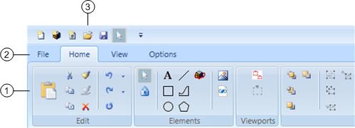
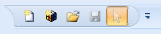
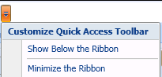

Ribbon
The ribbon is a command bar that provides you with three tabs—Home, View, and Options—that enable you to customize your workspace, and create, edit, and format your graphic images.
Along the ribbon, you will find the File menu button, and then the ribbon tabs and groups. In the example below, the customizable quick access toolbar is above the ribbon, but, can also be displayed below the ribbon.

Ribbon | ||
| Name | Description |
1 | Tabs and Groups | Tabbed menu bar that enables you to customize your workspace, and create, edit, and format your graphic images. The three tabs include the Home, View, and Options. Each tab includes a series of selectable task buttons organized into groups. |
2 | File Menu | Lists a number of frequently used tasks having to do with creating new graphics or Symbols, saving, printing, troubleshooting, and converting AutoCAD files. |
3 | Quick Access Toolbar | A customizable menu that allows you quick access to any tasks that have been added to the menu. |
Quick Access Toolbar

The customizable quick access toolbar allows you to store shortcuts for tasks and features you need quick access to. You can select where to position the toolbar, and from the quick access toolbar, you can also minimize and maximize the ribbon.

The Quick Access Toolbar menu allows you to move the mouse over the ribbon command buttons to add a task to the quick access toolbar or to mouse-over command buttons on the quick access toolbar to remove tasks. Depending on your settings, the quick access toolbar is located above or below the ribbon.